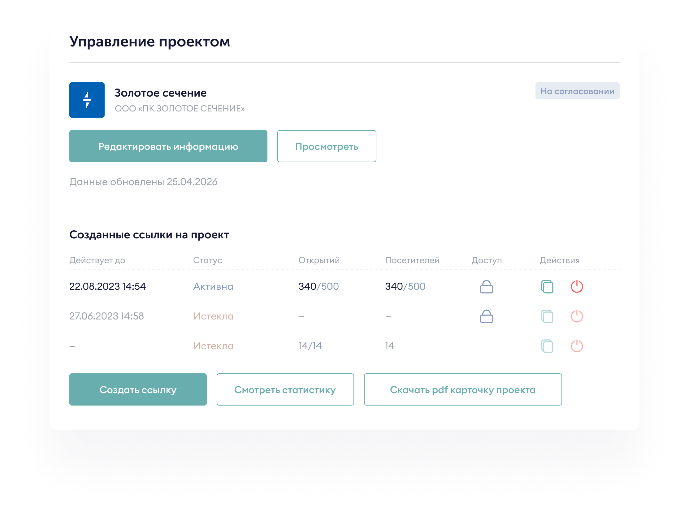
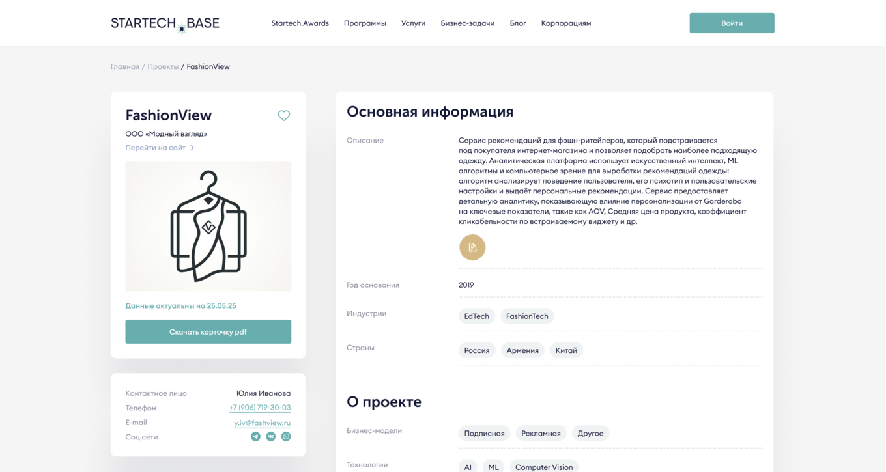
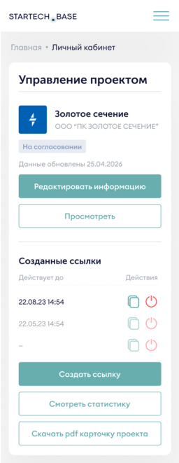

A startup profile to share with investors
Founders on Startech.Base filled out a profile to find investors. To introduce their startup outside the platform, they had to repack the same information into a pitch deck. We gave them a way to send an investor a link to their project.
Visit Startech.BaseAbout the project

One profile, two uses
The profile already covered the product, team, business model and stage. A founder could update the platform while an investor still had an outdated deck in their inbox.
We considered building a presentation editor. For an initial introduction, though, founders had already supplied the information an investor needed. I reorganised the profile for reading and designed a page that recipients could open without an account.
How founders share a profile
Publishing a startup in the directory made it searchable. Founders also needed a way to introduce a project to a particular investor. We separated those actions so founders could keep a project out of the directory and still share a link.
I brought each project’s links together in the founder dashboard. A founder can create a link, set an expiry date or a view limit, and send it to a recipient. They can return to the same page to check the link’s status and usage.

What an investor sees
I put the product description and contact details at the top of the profile, with the last update date next to the PDF download.

Further down the page, investors can review the team, financial figures and funding request. View the complete profile

The dashboard and profile on mobile
On mobile, each dashboard link shows its expiry date and two actions: copy and disable. In the investor view, the project card and contact details appear first, followed by the product description.
